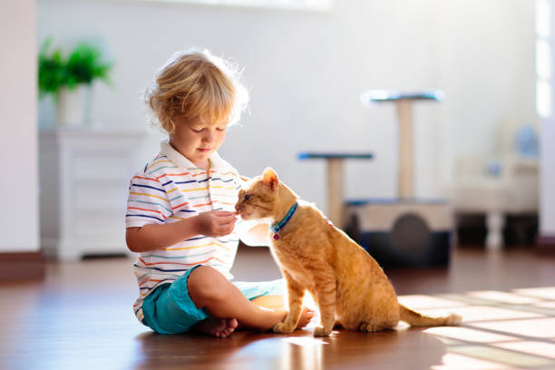
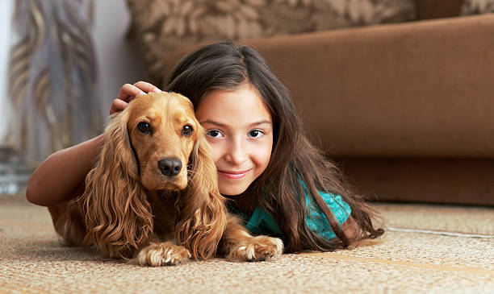

House for tails
Give a home to those who need it!

The "Home for Tails" event is our project aimed at helping homeless animals and supporting shelters that care for
abandoned cats, dogs, and other pets. Every year, thousands of animals end up on the streets due to human irresponsibility,
natural disasters, or simply by chance. Many of them die from hunger, illness, or abuse.

The goal of the event is not only to raise funds for food, medicine, and improving shelter conditions
but also to draw public attention to the problem of stray animals. The organizers of the event work with volunteer
organizations, veterinary clinics, and animal rights advocates to give these animals a chance at a decent life.
Main Areas of the Event:
1. Fundraising: Funds will be used to buy food, medicine, pay for veterinary services, and repair
enclosures in shelters.
2. Shelter Assistance: Volunteers help care for the animals, organize socialization activities for pets,
and find them new homes.
3. Education: Lectures and workshops are held on how to properly care for animals, why it’s important to
spay/neuter pets, and how to prevent abuse.
4. Finding Homes: The event includes open days at shelters, where anyone can meet the animals and take one
home.
How to Participate:
1. Make a Donation: Even a small amount can save a life. Donations can be made through the event’s website or
via SMS.
2. Donate Food and Medicine: Collection points are set up in every city where you can bring food,
medicine, leashes, bowls, and other necessary items.
3. Become a Volunteer: If you have the time and desire, you can help shelters with animal care,
organizing events, or transporting pets.
4. Spread the Word: Share information on social media using the hashtag #HomeForTails.
The more people know about the event, the more animals we can save.
5. Adopt a Pet: If you’re ready to give a home and care, shelters will be happy to help you find a new friend.
Why It’s Important:
Stray animals are a problem that can only be solved together. They can’t ask for help, but we can make their lives
better. Every donation, every hour of volunteer work, and every social media post brings us closer to our goal — a
world where every animal has a home and a loving family.
Conclusion:
The "Home for Tails" event is not just about raising money; it’s an opportunity to change the lives of those who depend on us.
Join us to make the world a kinder place and save those who need it so much.
"Give them care — because they give us their love!"